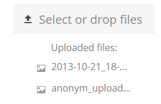

Faire des téléversements anonymes
Vous pouvez créer vos propres dossiers spéciaux de téléversement pour que d’autres personnes puissent partager des fichiers avec vous sans devoir s’identifier sur le serveur ni être utilisateur Nextcloud. Ils ne seront pas autorisés à voir le contenu du dossier ni à effectuer des modifications. C’est une excellente alternative à l’envoi de lourdes pièces jointes par e-mail, à l’utilisation du FTP ou aux services commerciaux de partage de fichiers.
Mettre en place votre propre dépôt de fichiers
Allez vers Fichiers et créez ou choisissez le dossier, l’envoi anonyme devrait s’effectuer vers :

Cochez Partager un lien, Autoriser l’édition, Cacher la liste des fichiers :

Désormais, vous pouvez envoyer manuellement le lien vers le dossier de téléversement ou utiliser la fonction d’envoi de Nextcloud, si l’administrateur l’a autorisée.
Téléverser des fichiers
L’utilisation de la fonction de téléchargement anonyme est simple. Vous recevez un lien vers le dossier de téléchargement, cliquez sur le lien, puis vous verrez une page Nextcloud avec un bouton «Cliquez pour télécharger».

Ceci ouvre une interface qui vous permet de choisir le fichier ou le dossier que vous voulez téléverser. Vous pouvez aussi glisser des fichiers sur la fenêtre.
Quand votre téléversement est terminé, la liste des fichiers apparaît:
